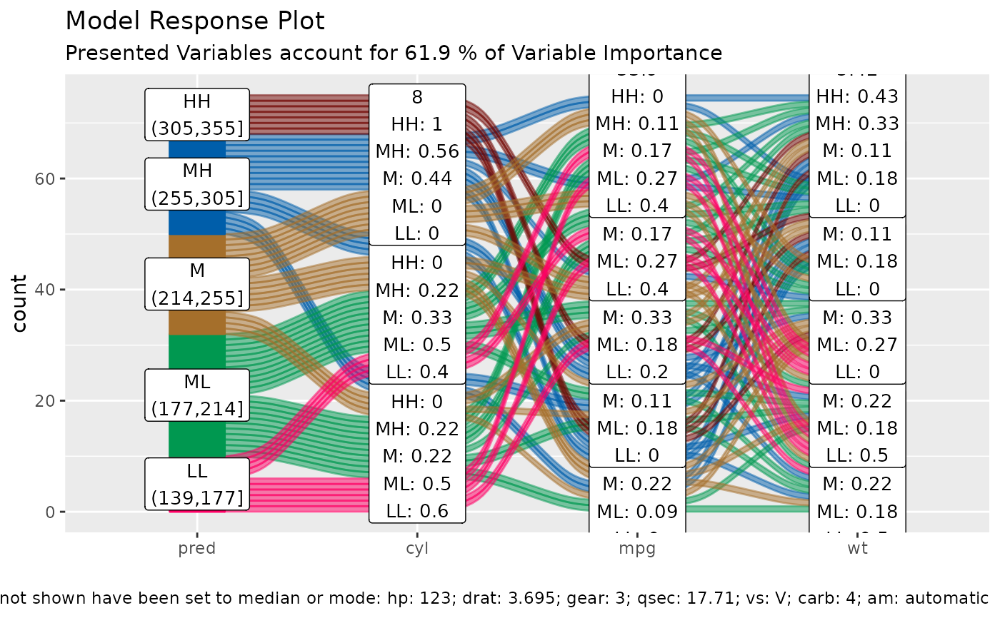

R/alluvial_model_response.R
alluvial_model_response_parsnip.RdWraps alluvial_model_response and
get_data_space into one call for parsnip models.
alluvial_model_response_parsnip( m, data_input, degree = 4, bins = 5, bin_labels = c("LL", "ML", "M", "MH", "HH"), col_vector_flow = c("#FF0065", "#009850", "#A56F2B", "#005EAA", "#710500", "#7B5380", "#9DD1D1"), method = "median", parallel = FALSE, params_bin_numeric_pred = list(bins = 5), pred_train = NULL, stratum_label_size = 3.5, force = F, resp_var = NULL, .f_imp = vip::vi_model, ... )
| m | parsnip model or trained workflow |
|---|---|
| data_input | dataframe, input data |
| degree | integer, number of top important variables to select. For plotting more than 4 will result in two many flows and the alluvial plot will not be very readable, Default: 4 |
| bins | integer, number of bins for numeric variables, increasing this number might result in too many flows, Default: 5 |
| bin_labels | labels for the bins from low to high, Default: c("LL", "ML", "M", "MH", "HH") |
| col_vector_flow, | character vector, defines flow colours, Default: c('#FF0065','#009850', '#A56F2B', '#005EAA', '#710500') |
| method, | character vector, one of c('median', 'pdp')
. Default: 'median' |
| parallel | logical, turn on parallel processing for pdp methof. Default: FALSE |
| params_bin_numeric_pred | list, additional parameters passed to
|
| pred_train | numeric vector, base the automated binning of the pred vector on the distribution of the training predictions. This is useful if marginal histograms are added to the plot later. Default = NULL |
| stratum_label_size | numeric, Default: 3.5 |
| force | logical, force plotting of over 1500 flows, Default: FALSE |
| resp_var | character, sometimes target variable cannot be inferred and needs to be passed. Default NULL |
| .f_imp | vip function that calculates feature importance, Default: vip::vi_model |
| ... | additional parameters passed to
|
ggplot2 object
this model visualisation approach follows the "visualising the model in the dataspace" principle as described in Wickham H, Cook D, Hofmann H (2015) Visualizing statistical models: Removing the blindfold. Statistical Analysis and Data Mining 8(4) <doi:10.1002/sam.11271>
We are using `furrr` and the `future` package to parallelize some of the computational steps for calculating the predictions. It is up to the user to register a compatible backend (see plan).
df = mtcars2[, ! names(mtcars2) %in% 'ids' ] m = parsnip::rand_forest(mode = "regression") %>% parsnip::set_engine("randomForest") %>% parsnip::fit(disp ~ ., data = df) alluvial_model_response_parsnip(m, df, degree = 3)if (FALSE) { # workflow --------------------------------- m <- parsnip::rand_forest(mode = "regression") %>% parsnip::set_engine("randomForest") rec_prep = recipes::recipe(disp ~ ., df) %>% recipes::prep() wf <- workflows::workflow() %>% workflows::add_model(m) %>% workflows::add_recipe(rec_prep) %>% parsnip::fit(df) alluvial_model_response_parsnip(wf, df, degree = 3) # partial dependence plotting method ----- future::plan("multisession") alluvial_model_response_parsnip(m, df, degree = 3, method = 'pdp', parallel = TRUE) }